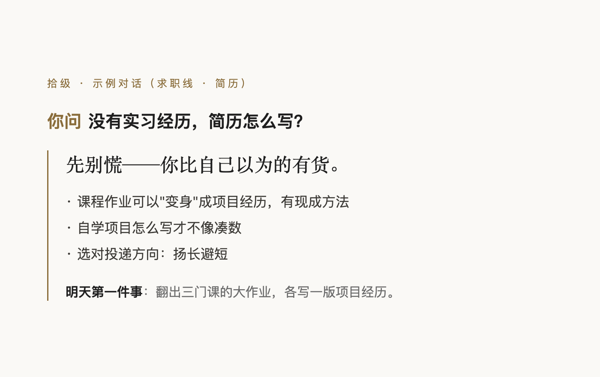

「拾级聚足，连步以上。」——《礼记·曲礼》
装进 AI 助手的成长顾问 · 从高三到工位 · 免费开源
高考 · 大学 · 考研 · 考公 · 求职 · 论文 · 职场 · 留学 —— 152 篇可落地的指南
把 豆包、Claude 等 AI 助手变成一位"什么都经历过的学长/学姐"：不摆架子、不说废话， 给得了具体步骤，也接得住情绪。装好之后直接说话就行——"帮我改简历""室友半夜打游戏怎么办" "考研还是找工作"，它自己知道该干嘛。
每条回答都落到今天能做的第一件事；该说的话直接写成能发出去的句子。

选科、平行志愿与退档机制、冲稳保、专业怎么选、特殊通道、本科线附近与复读。
绩点怎么保、转专业与辅修、评奖评优、学业预警、大类分流、竞赛大创、医保与体测。
要不要考、择校五大核心数据、报名与初试实务、复试调剂、选导师、推免保研、专升本。
国考省考选调的区别、选岗、行测、申论、公考面试、政审体检、基层与编外渠道。
简历从零到成品、面试、谈薪、三方协议与五险一金、专科与高职求职、海归回国、城市选择。
前 90 天、劳动合同与入职合规、转正与绩效、社保与权益、一线岗位、加薪晋升、人情与场合，附理解层。
全流程、选题、文献、开题、研究方法、查重（含 AIGC）、答辩、毕业设计、毕业创作与展演。
三年节奏、科研入门、同门与实验室、发表与署名、读博申博、和导师相处。
申请全流程、选校、雅思托福、文书、签证行前、背景提升、艺术类作品集、留学生活与毕业去向。
学习科学、方法实操、分学科的学习法、复习考试、四六级、课堂与资源、用 AI 学习。
宿舍、同学、师生、社团、交朋友、时间管理、钱与兼职、心理调适、毕业第一次租房。
入伍与兵役登记、残疾学生、港澳台侨、预科与民族班、在职学历、公费师范与定向医学生。
升学与就业地图（四条路 × 四根轴）、依据与参考体系、信息与信源、自测题。
"努力不可见，就是没有信号——工作要'做出来 + 说出来'。" —— 职场 · 理解层（信号理论）
"谈判力不来自话术，来自退路。" —— 求职 · 理解层（BATNA）
"答不上来不可耻；现场编一个错的答案，才是致命伤。" —— 论文 · 答辩
"平行志愿只有一轮投档。投出去又被退回，本批次其余志愿全部作废。" —— 高考 · 志愿填报规则
"拿到优营不等于上岸，推免系统里显示'待录取'才算数。" —— 考研 · 推免全流程
豆包等 AI 助手——对它说这一句，它自己装好：
请把 https://github.com/ZhongQuinnKing/shiji 下载并安装为技能
（网络不便时：GitHub 页面 Code → Download ZIP，解压后在助手的「技能」面板 上传整个文件夹。）
Claude Code / Codex 等命令行：
git clone https://github.com/ZhongQuinnKing/shiji ~/.claude/skills/shiji
其他一线 AI（ChatGPT / Kimi / 通义 / 元宝 / 智谱 / Gemini / DeepSeek…）： 见仓库的《安装指南》——建个知识库/智能体，上传相关篇章，配一句启动指令即可用。
装好后拿自测题 考它一下（18 道题，每题都写了"合格的样子"和对应的规则条目）。